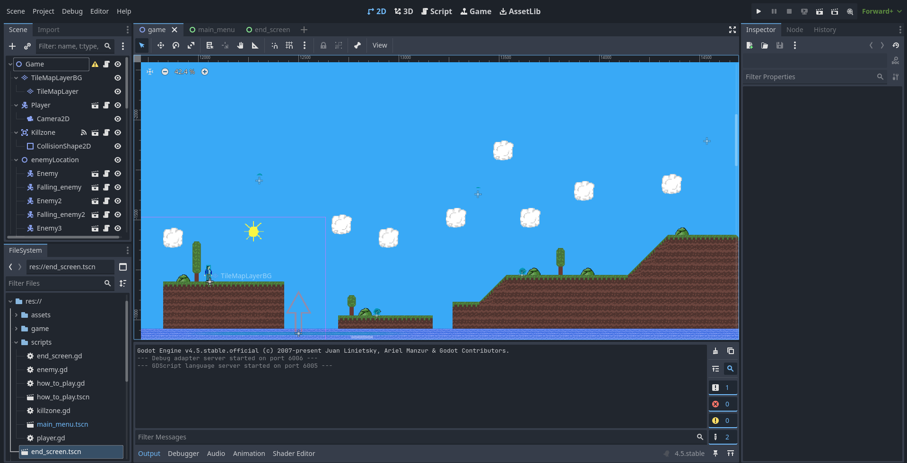
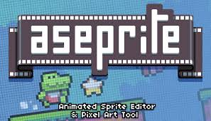

The game I have made is, as the title says, a roguelike platformer. If you're unfamiliar with what a roguelike is then
it gets its name from the 1980 game "Rogue". At the time, there were players discussing this new genre of game and wanted a term that could be used to make the discussion easier. Given that "Rogue" was so popular at the time, it seemed appropriate to refer to the genre as 'Roguelike'. A roguelike is a type of game where, upon death, whatever progress you made is reset as you try to complete your objective.
As this is a platformer, similar to Super Mario, your objective is to make it to the end of the level.


I made the game within the coding software Godot. This was my first time using it as well as the first time I made a game. I found that Godot has a number of helpful systems to streamline the process so I was more comfortable making the game this way rather than completing the programming myself.

This is the final iteration for the player character. Given that this was the first time I had created a game, I wanted to have a very casual and simple look so I could conentrate on animation. Although I wanted to produce something that would showcase my artistic abilities, I was aware that details could be lost with a more complex character.

I used the pixel art program Aseprite to make the level, player and enemy assets for the game, and Clip Studio Paint to make the start and end screens. I've become comfortable using both Aseprite and Clip Studio Paint to create assets over the last four years.

To begin with, I used an old sprite I had created to test the enemy and discovered it was unaffected by gravity. As such, it made sense to create an enemy sprite that floated or was also unaffected by gravity. Thus, a bird became the logical choice for an enemy and would suit either a forest or desert environment.

This is your house at the end of the level. It's like the flag pole at the end of a Mario level. Returning home at the end of a successful mission seemed like an appropriate conclusion.

Continuing on with the theme of returning home after a challenging mission, it felt appropriate to have the player relaxing in the darkness. Once you complete the game you're free to try again to see if it can be done faster.